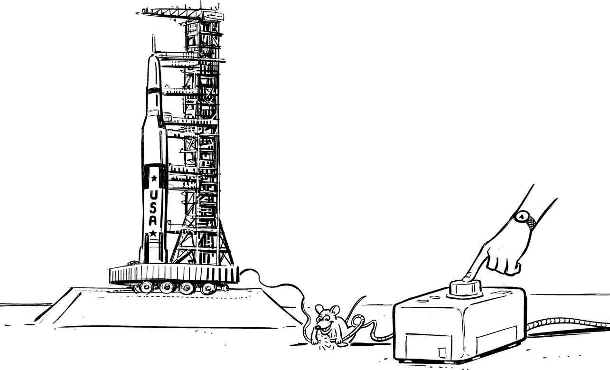
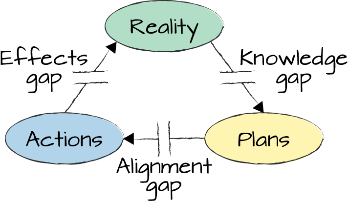
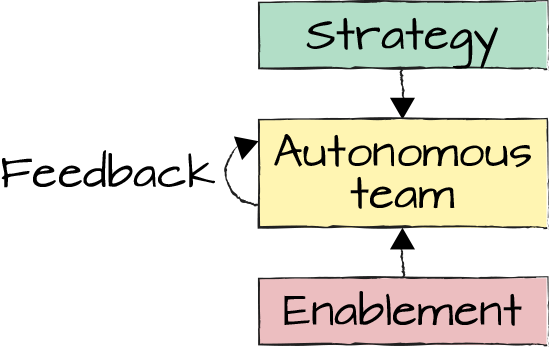

It’s When You’re Told Exactly What You Want to Hear

While working in Asia, I’ve become accustomed to sharing a few of my personal details before presenting to a group of people. I like the idea because it didn’t have the flavor of bragging about professional accomplishments; rather, it gives the audience an impression about the speaker’s background to better understand what shaped their thinking. In a presentation to a group of CEEMA (the Central-Eastern Europe, Middle-East, and Africa region) COOs and CIOs, I once opened with a slide summarizing my core beliefs in the form of the pin buttons that many people used to wear in the 1980s.
The one slogan that received immediate attention was “Control is an illusion.” Even more attention was paid to my explanation: “You feel that you have control when people tell you exactly what you want to hear.” Perhaps this wasn’t the kind of control these senior executives wanted to have over their business.
How can control be an illusion? “Having control” is based on the assumption that a direction set from top down is actually being followed and has the desired effect. And this can be a big illusion. How would you know that it does, if you are simply sitting at the top, pushing (control) buttons instead of working alongside the staff? You can rely on management status reports, but then you make a major assumption that the presented information reflects reality. This might be yet another big illusion.
Steven Denning uses the term semblance of control1 in contrast to actual control for this phenomenon in large organizations. A more cynical version would be to claim that the inmates are running the asylum. In either case, it’s not the state you want your organization to be in.
A brief look at control theory sheds some light on where the illusion originates. Control circuits, such as a room thermostat, keep a system in a stable condition—in this example, keeping a room at a constant temperature. They do so based on sensors and feedback: the thermostat senses the room temperature and turns the furnace on when the room is cold. When the desired temperature is reached, it turns off the furnace.
The feedback loop compensates for external factors such as the outside temperature or someone opening the window. This runs counter to many project planning approaches that attempt to predict all factors up front and then look to execute according to plan. It’s like running the heater for exactly two hours and then blaming the cold weather for the room not being warm enough. Embarrassingly, a cheap thermostat can give us better control than some project managers.
Jeff Sussna describes the importance of feedback loops in his book Designing Delivery,2 drawing on the notion of cybernetics. While most people think of cyborgs and terminators when they hear the term, cybernetics is actually a field of study that deals with “control and communication in the animal and the machine.” Such control and communication is almost always based on a closed signaling loop.
When we portray large organizations as “command-and-control” structures, we often focus only on the top-down steering part, and less on the feedback from the “sensors.” But not using the sensors means one is flying blind, possibly with a feeling of control, but one that’s disconnected from reality. It’s like driving a car at night without headlights and turning the steering wheel with no clue where the car is actually headed—a very dumb idea. It’s shocking to see how such behavior, which borders on absurdity, can establish itself in large organizations.
Even if an organization uses sensors—for example, by obtaining the infamous status reports—not all is necessarily well. Anyone who has heard the term watermelon status understands: these are the projects whose status is “green” on the outside but “red” on the inside, meaning that they are presented as going well but in reality suffer from serious issues. Corporate project managers and status reporters aren’t straight-out liars, but they might be overly optimistic or take some literary license to make their project look good. “700 happy passengers reach New York after Titanic’s maiden voyage” is also factually correct, but not the status report you’d want to get.
Observing how much trust some senior executives place in PowerPoint slides might make you believe that it not only has a built-in spell checker but also a lie detector. Digital companies are generally suspicious of fabricated presentations and “massaged” messages, but instead believe in hard data, preferably rendered in live metrics dashboards.
Google’s Mobile Ads team in Japan reviewed the performance of all ad experiments, run as A/B tests, every week, and decided which experiments should be accepted into production, which ones should be rejected, and which ones needed to run longer in order to become conclusive. The decisions were based on hard user data, not projections or promises.
Working based off hard data can be frustrating because getting a solution running doesn’t yet earn you much praise: that’s expected anyway. Praise comes once your solution receives attention and traffic from actual users—data that’s much harder to fabricate.
Some control circuits take in more feedback signals and refine how they drive the system. For example, some heating systems measure the outside temperature to predict energy loss through windows and walls. Google’s Nest thermostat takes it a step further: it takes in additional information, such as the weather forecast (the sun helps warm the house), and when you are usually home or away. It also learns about the inertia of the heating system, which can lead to overheating the house due to heat capacity left in the radiators when the furnace is switched off. Nest is thus called a “learning” or “smart” thermostat; it takes in additional signals and optimizes what it does based on that feedback. It would be fantastic if we could apply that label to more project managers.
When people speak about command-and-control structures, they are quick to cite the military, which, after all, is run by commanders. The military organization most equated with stodginess and “iron discipline” is the Prussian army. For people living in Bavaria, in Germany’s southern region, Prussia is externalized in the concept of the Preiß, a not-so-friendly term referring to people born north of their state.
Ironically, the Prussian military understood very well that one-way control is merely an illusion. Carl von Clausewitz wrote a 1,000-page tome, On War, in the early 1800s, in which he cites sources of friction: the external gap between desired and actual outcomes (uncertainty) and the internal gap between plans and the actions of an organization.
In his book The Art of Action,3 Stephen Bungay extends this concept into three gaps, as illustrated in Figure 27-1: the knowledge gap between what you’d like to know and actually do know, the alignment gap between plans and actions, and the effects gap between what you expect your actions to achieve and what actually happens.

You can recognize organizations that believe they can close these gaps by the methods they apply. They try to close the knowledge gap by generating thick requirements documents, which are often outdated by the time they are completed. They try to tackle the alignment gap by developing extensive project plans and micro-managing according to them. Lastly, the effects gap is a bit more difficult to close. Such organizations try nonetheless, either through the aforementioned watermelon status reports or by using proxy metrics (Chapter 40), things that are easily measured but don’t quite reflect reality. Essentially, these organizations create their own reality, or illusion.
Many IT organizations believe they can close the knowledge, alignment, and effects gaps, an approach that has been disproven some 200 years ago.
Unlike some IT organizations, the Prussians already knew that the gaps couldn’t be eliminated. Instead, they accepted the gaps and adjusted their management style accordingly, replacing a concrete order with the concept of Auftragstaktik, best translated as “mission command” or “directive.” Understanding the purpose of the mission enabled the troops to adjust to unforeseen circumstances (knowledge or effects gaps) without having to report back to central command. This would save valuable time and lead to better decisions in the local context.
The difference between an order and a mission command becomes clear with a simple example. Suppose that a small platoon is given the order to take a hill. As it climbs up the hill, the soldiers realize that there’s no resistance at all and progress easily. Should they march to the top? If they have been given a simple command, they’ll do so. This might be correct if the intent, the Auftrag, was to take the hill as a strategic position. However, if the intent was to attack troops positioned on the hill, advancing to the top makes little sense.
Auftragstaktik doesn’t mean people are left to do whatever they deem appropriate. It’s based on discipline, but active discipline, one that respects the commander’s intentions, as opposed to passive obedience, which demands blind execution. Also, when deciding on an action, teams pull from a well-defined repertoire of tactics that are well known and extensively trained.
So, the Preißn weren’t so stodgy after all and were possibly ahead of many modern IT departments.
Ironically, it turns out that giving teams decision autonomy actually increases control as it accepts the gaps and avoids operating in an illusion. But be careful: many organizations equate autonomy to “everyone does what they think is best.” Now, unfortunately, that’s not autonomy, that’s anarchy: whether we like it or not, anarchists do what they believe is right.
How can large-scale IT organizations establish autonomy without falling into anarchy? In my experience, it requires the interplay between three elements (see Figure 27-2):
It may sound trivial, but first you need to enable people to perform their work. Sadly, corporate IT knows many mechanisms that disable people: HR processes that restrict recruiting, approval processes that take weeks to provision servers, black markets (Chapter 29) that are inaccessible to new hires. Just like a thermostat connected to a furnace with a plugged gas line won’t do much good, high friction negates autonomy. In IT, platforms such as cloud computing can enable employees and at the same time assure consistency in “tactics” as they provide a common set of tools to select from.
Autonomous teams can make better decisions because they have the shortest feedback cycles (Chapter 36). This way, they can learn fast and improve. This works only if teams see the consequences for their decisions. If the thermostat is mounted in another room than the radiator, there’s no control circuit.
To make good decisions, teams need to be able to distinguish which decisions are good. They therefore need to have specific goals; for example, revenue generated or quantifiable user engagement. These goals aren’t specific commands but overall objectives to be achieved. A thermostat is useful only if someone sets the desired temperature.

This system won’t work if you omit one or more elements: strategy without enablement will lead to zero progress but lots of frustration. Autonomy without strategy or feedback will resemble anarchy as teams can’t judge the appropriateness of their decisions. And enablement without strategy will only make anarchy more efficient. For example, the Spotify Squad Model4 found that increasing alignment on a common strategy supports increasing autonomy.
Many enterprise architecture teams (Chapter 4) set direction without being responsible for the consequences. Applying the logic that lack of strategy and feedback leads to anarchy implies a rather disconcerting outcome.
Another insight might surprise traditional organizations that are looking to give teams more autonomy: autonomous teams need better management. Managing nonautonomous teams is comparatively easy: they’ll largely do as told. Autonomous teams, in contrast, require leadership: they need to be told the overall intent and goals. So, ironically, organizations that are looking to increase autonomy in their teams might need to strengthen management first.
Autonomous teams need better management.
Even though a control circuit’s job is to keep a system in a steady state without someone having to monitor it, observing the circuit’s behavior can still be useful in a larger context, meaning we shouldn’t blindly trust the autopilot. For example, if the air filter in a forced-air heating system becomes clogged or the furnace collects soot, it will take longer to warm the house under otherwise identical conditions. A “dumb” thermostat will simply run the heater longer, covering up the issue. A smart control system, in contrast, can measure the length of the thermostat dutycycle; for instance, how long the furnace runs to reach or maintain a certain room temperature. If this duty cycle extends, the controller can give a hint that the system is no longer operating as efficiently as before. Therefore, a control loop shouldn’t be a black box; instead, it should expose health metrics based on what it has “learned.”
Advanced cloud features like server autoscaling, which are able to absorb sudden load spikes without human intervention, are handy, but they can also mask serious problems. For example, if a new version of the software performs poorly, the infrastructure might attempt to autocompensate this problem by deploying more servers. You might just find out a bit later via your monthly bill.
In control theory, observing the behavior of a control loop is considered an “outer loop” that observes the behavior of the inner control loop and can trigger adjustments to the system.
1 Steve Denning, “Ten Agile Axioms That Make Managers Anxious,” Forbes, June 17, 2018, https://oreil.ly/Dn1es.
2 Jeff Sussna, Designing Delivery: Rethinking IT in the Digital Service Economy (Sebastopol, CA: O’Reilly, 2015).
3 Stephen Bungay, The Art of Action: How Leaders Close the Gaps between Plans, Actions and Results (London: Nicholas Brealey Publishing, 2010).
4 Henrik Kniberg, “Spotify Engineering Culture (part 1),” Spotify Labs, March 27, 2014, https://oreil.ly/d3MAI.